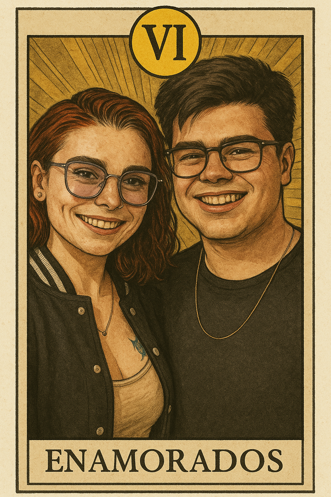

Feliz Dia dos Namorados! ❤️
(antecipado ou não, o que importa é o sentimento)
Oi, meu amor, tudo bem? Se você está lendo isto antes do dia 12, é porque você foi bem no quiz (estava bem fácil, né?...), então os meus parabéns, meu amor (pessoa ansiosa, ai ai)!
Queria, antes de tudo, te desejar um feliz dia dos namorados. Sei que, no fundo, é só uma data, mas quero que todas as nossas datas tenham um pouco de importância, afinal, todo o dia com você é um dia especial para mim.
Você, de todas as pessoas que eu já conheci na vida (sem exceção alguma), é a pessoa mais incrível, única e admirável de todas. Mesmo se houvesse uma sala com todas as pessoas que eu já conheci, você seria a única que me cativaria, que me faria querer estar perto, que me faria querer te conhecer mais e mais, até porque, foi assim desde a primeira vez que te vi (literalmente), e isso não tem a ver com a sua beleza (que é inegável), mas algo em ti me atrai, me cativa, me prende. A tua voz me chama, me acalma, o teu olhar me encanta, o teu sorriso me ilumina, e eu não consigo explicar o porquê, mas é assim que me sinto e tenho a certeza que é percetível para qualquer pessoa que me veja quando estou contigo.
Eu não sei o que fiz para te merecer, mas sou grato por cada dia que passo contigo, por cada momento que vivemos juntos, por cada risada, cada conversa, cada silêncio confortável. Eu fui agraciado com a tua presença na minha vida. Você não é um problema, nunca vai ser um problema. Você é solução, meu bem, você é resposta, você é paz, você é amor, você é repleta de coisas boas. Tudo em você é bom. Não consigo expressar isso em palavras, queria que fosse possível, mas sinceramente, faltam palavras neste mundo para te descrever, faltam palavras para descrever o quão sortudo eu sou. Você transpira amor, você é luz e eu te amo exatamente do jeito que você é. Daqui a pouquinho é o meu aniversário (ou foi ontem, depende de quando tá lendo isso), e você foi e é o melhor presente que eu poderia ter recebido este ano (e em toda a minha vida). Eu sempre vou estar aqui para você, independentemente do que seja, independentemente do que aconteça. Você NUNCA vai atrapalhar a minha vida, você só ajuda, você reluz tudo o que é bom neste mundo.
Obrigado por tudo o que você fez, tem feito e faz por mim, meu amor. Saiba que sempre vai ter um abrigo em mim, sempre vai ter para onde voltar e, o mais importante de tudo, é que sempre vai ter alguém à sua espera. E você é linda, assim, do jeito que é. Não se olhe como uma pessoa "quebrada", não se olhe como um problema, não se veja como algo mau, pois não é e não mereces carregar o peso de te sentires assim. Você não traz coisas ruins. Desde o dia em que tomámos um café até ao exato momento em que estou ecrevendo esse texto, só me trouxeste alegria, paz, amor, tudo o que há de bom neste plano. Eu queria que voce enxergasse com os meus olhos para você ver a mulher INCRÍVEL que é. É maravilhosamente incrível, é um exemplo. Eu espero ser como você um dia, espero ser metade do que você é. Me inspira, te amo mais e mais.
Com amor, do teu marido do futuro.
❤️
O nosso futuro nas cartas
Eu não sou nenhum artista como você, sei que esta arte está longe de ser perfeita, mas "fiz" ela inspirado nas cartas que você tem ai no estúdio (tenho foto de todas...). Espero que você goste.